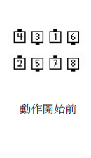
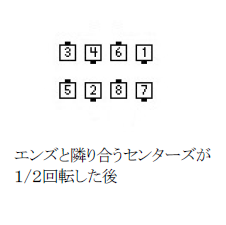
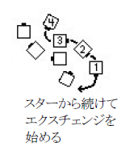
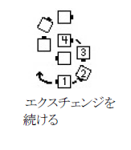
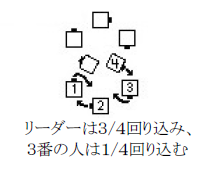
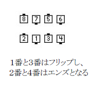

Spin Chain & Exchange the Gears （スピン チェイン アンド エクスチェインジ ザ ギアーズ）
動作を始める隊形 オーシャンウエイブ。
タイミング ２６拍。
動作
それぞれのエンズと隣り合うセンターズが１/２回転する。 各オーシャンウエイブの新しいセンターズは３/４回り、回り終わると、エンズが中へフリップ（１８０度内向きに回転＝Ends Run(エンズ ラン)に同じ）する。 最も中心にいる人がトレイドした後、セットの半分それぞれが４人のスター（ギア）を作り、３/４回転する。




最も中心にいる人それぞれ（一人は図示した１番の人）がリードして、スターにいる次の人たち（２番、３番、４番）を引き連れて、循環路にそって反対側のスターからくる別の人たちの外側へ移動する（エクスチェンジ）。 １番の人は３/４回り込み、３番の人は１/４回り込むと、１番と３番は内側へフリップし、オーシャンウエイブのセンターとなり、２番と４番のダンサーは引き続き循環路にそって移動し、前にいるダンサーとその内側の手を取ってオーシャンウエイブのエンズとなる。 同じ手を取ったオーシャンウエイブで、また、動作を始めた時と同じような位置で動作を終わる。
   
スタイリング
スターを回転しエクスチェンジをする場合、４人のグループはそれぞれＳ字のような循環路をスムーズに移動する。 エクスチェンジをしてオーシャンウエイブの隊形を作るが、切れ目なく動作を行う。 オーシャンウエイブとスターは普通のスタイリングで行う。 それぞれのスターを作るとき（スターを回転する前）、エクスチェンジをリードするダンサーは外側の手を上げて、“続いてくる”ように示すのがふつうである。 その手はスターを回転し、エクスチェンジを行う間上げたままにし、後ろから来るダンサーの内側となる手をスムーズに取る。
© 版権 1997, 2001-2014 CALLERLAB、スクエアダンスコーラー国際協会。 再印刷、再発行、使用料の 発生しない写物製作はこの文章表示を条件にこれを許可する。 使用料の発生しないインターネットでの刊行 はこの文章表示を条件にこれを許可する。 使用料の発生しない一部または全ての引用はこの文章表示を条件 にこれを許可する。 いかなる写物製作または刊行においても本書内の資料は変更されまた改訂されてはなら ない。
向かい合ったカプルの規則を適用する。
コーラーによってはスターを回す３/４分数を変えることがあるが、この場合異なったダンサーが１番となり、エクスチェンジをリードする。